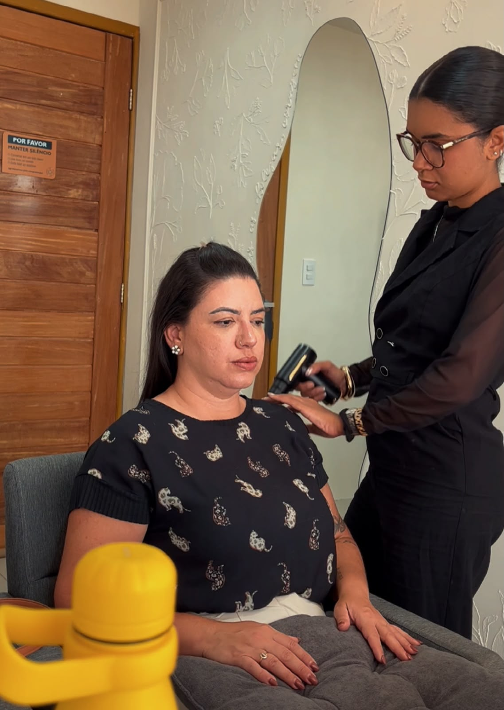
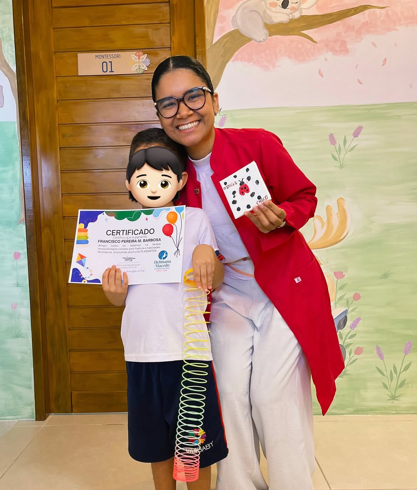
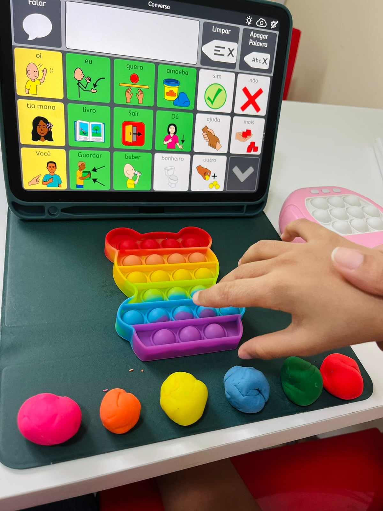
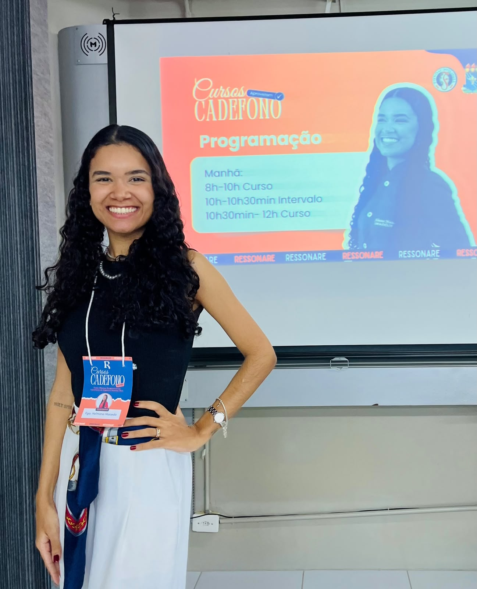

01
Espaço de Atendimento
Um ambiente organizado para receber e acolher cada paciente.
Olá! Sou Helmana, Fonoaudióloga pela Universidade Federal da Paraíba.🌟

Atraso de fala, trocas na fala, autismo, gagueira, disfunções na mastigação.
Gagueira, Voz, Oratória.
Treinamento de comunicação para pessoas e empresas.
Mentoria clínica do raciocínio clínico ao planejamento terapêutico. Confecção de prancha personalizada de CAA.
Um ambiente preparado para receber você com cuidado, conforto e atenção em cada etapa do atendimento.
R. Empresário João Rodrigues Alves, 125 - Bancários, João Pessoa - PB, 58051-022
Cada detalhe foi pensado para oferecer conforto, tranquilidade e acolhimento, respeitando as necessidades de cada pessoa em seu processo terapêutico.
Um ambiente acolhedor e reservado para atendimentos, orientações e atividades voltadas a adolescentes e adultos.
Um ambiente organizado para receber e acolher cada paciente.
Ambiente destinado às atividades e orientações terapêuticas.
Detalhes do ambiente que contribuem para uma experiência agradável.
Um ambiente lúdico e acolhedor, preparado para tornar os atendimentos infantis mais leves, interativos e estimulantes.
Um espaço pensado para acolher as crianças com conforto.
Recursos lúdicos que podem auxiliar nas atividades terapêuticas.
Materiais utilizados para estimular a comunicação e a interação.
Conheça algumas das frentes de atuação, experiências profissionais e temas trabalhados por Helmana na área da comunicação e da fonoaudiologia.

Jornalista do SBT (TH+ Notícias)

Experiências e práticas voltadas ao público infantil

Uso de CAA para estimulação da fala

Transtornos do Neurodesenvolvimento

TEA, Gagueira & Oratória

Treino de fluência & Café
Eu e a Fonoaudióloga Bárbara Carolina preparamos um E-book especial como PRESENTE para você, mamãe, papai ou cuidador. Nele, você descobrirá os primeiros passos para estimular a fala do seu bebê. Em breve virá a continuação desse projeto com estratégias mais avançadas.
Baixar E-bookLeve seu trabalho para o digital com um site profissional, moderno e feito para aproximar você dos seus clientes.
Quero meu site